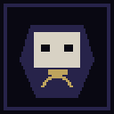
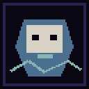
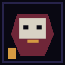
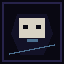
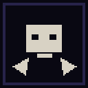

严格战术
能量时间轴、八方向位置、视野、状态叠加、装备词缀与多种 AI。
永久死亡会终止一次 build，却不会清除你已知的名字、赢得的信任，或拒绝过的权力。
在程序生成的灰烬前殿里权衡路线、资源与威胁。
让环境、证词与幻影回响彼此冲突，直到官方历史无法维持。
带着回响精粹和无法被重置的选择回到圣所。
破碎尖塔把医院、宫廷、墓地和未发生的人生缝在一起。手工叙事房间被注入程序地牢；每一层都保证留下一个无法只靠杀戮回答的问题。
能量时间轴、八方向位置、视野、状态叠加、装备词缀与多种 AI。
Lore 不是全知百科。每条证词都属于某个人，也可能保护某种权力。
五位圣所角色会记住你的回避、诚实、强迫与克制。
实体、物品、效果、对话、任务、房间和结局由 Resource 与 JSON 扩展。
灰烬前殿
可玩 · v0.1.1鎏金骨廷
王国如何把治疗变成税镜渊
你由谁开始，又在哪里结束伤冠之巅
修复、割断、统治，或合唱他们不是商店、地图、百科或钥匙。除非你坚持把他们变成那些东西。





[resource]
content_id = "base.story.act1.nave_missing_names"
required = true
room_tag = "story_nave"
cooldown_floors = 2
fallback_room_id = "base.room.story.ash_clinic"Act I: 灰烬前殿现已开源发布。
v0.1.1 · MIT · Godot 4.3